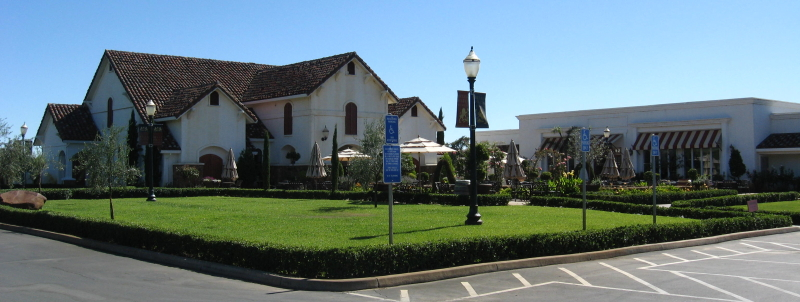

|
North America >
USA >
California >
Amador County >
Bella Piazza Winery

Bella Piazza Winery
Plymouth, CA
No tasting fee.
www.bellapiazzawinery.com
The sister winery of Villa Toscano,
Bella Piazza makes wines exclusively from Shenandoah Valley grapes. Barrel tastings are offered daily for the more
popular wines which are sold as futures.
Vintages:
California Shenandoah Valley Pinot Grigio
2008
California Shenandoah Valley Viognier
2008
California Shenandoah Valley Barbera
2006
California Shenandoah Valley Cabernet Franc
2006
California Shenandoah Valley Montepulciano
2006
California Shenandoah Valley Sangiovese
2008
California Shenandoah Valley Syrah
2006
California Shenandoah Valley Zinfandel
2006
California Shenandoah Valley Esola Vineyard Zinfandel
2006
2008
California Shenandoah Valley Rio Volpe Vineyard Zinfandel
2006
2008
California Shenandoah Valley Bella Rosso
2006
California Shenandoah Valley Stellina
2006
California Shenandoah Valley Port
2004
California Shenandoah Valley Fox Creek Reserve Port
2006
|